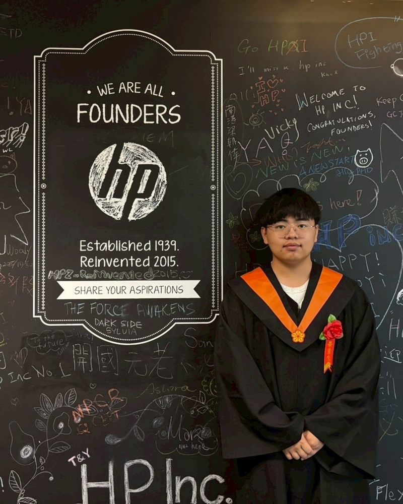
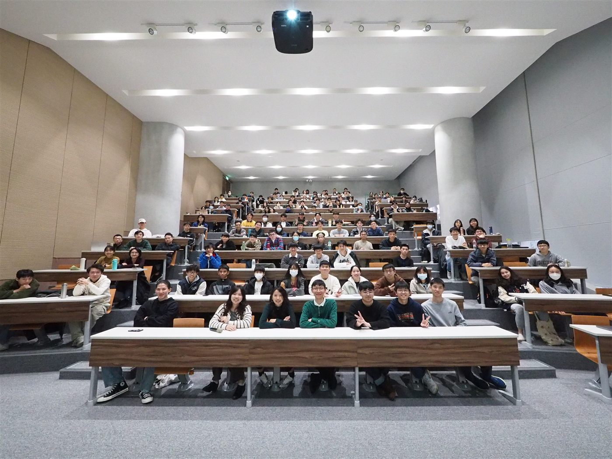
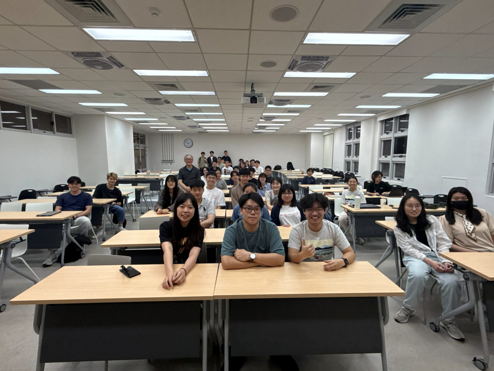
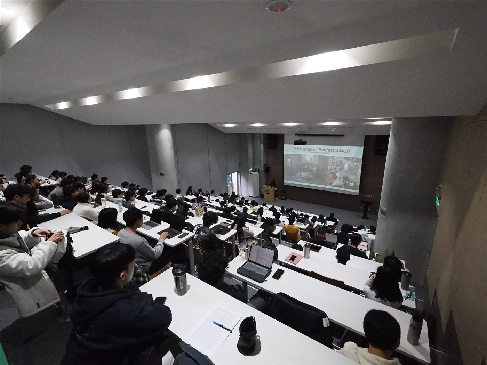
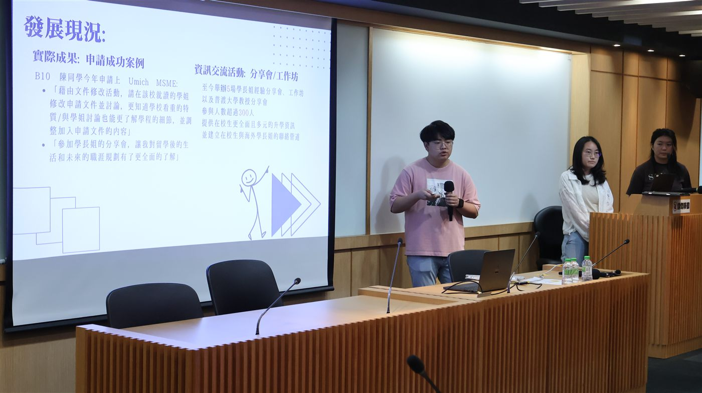
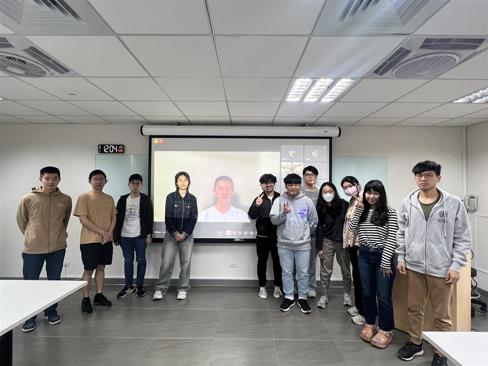

Prospective PhD Student · Fall 2027
Building robots that act as true partners.
I am Chen-Ye Hong, a roboticist working at the intersection of human–robot interaction, assistive robotics, and brain–computer interfaces. I build systems that let people control robots through their intent — from computer-vision gestures to neural signals — so that machines can meaningfully enhance daily life, especially for people with physical challenges.
I recently completed my B.S. in Mechanical Engineering at National Taiwan University and now work as a research assistant in the Brain–Computer Interface Lab at Academia Sinica. I am applying to PhD programs for Fall 2027.
Portrait photo
photo/portrait.jpg

Latest
Two co-first-authored papers in 2025 — multimodal assistive-robot control (TAAI 2025) and a smart joint-motion simulator (under review, IEEE T-BME). See Publications.
About
I am a Mechanical Engineering graduate of National Taiwan University working at the meeting point of robotics, human–robot interaction, and brain–computer interfaces. As a research assistant in the BCI Lab at Academia Sinica, I build assistive robots that people can drive through neural signals and computer vision — with the goal of developing robots that act as true partners, machines that meaningfully enhance daily life for people with physical challenges.
My path into robotics runs through mechanical design and hands-on engineering: I have designed experimental platforms for biomechanics research, built VR simulators for surgical training, and interned on HP's PC design team. Alongside research, I founded a student organization that helps others navigate graduate applications. I care about work that is both technically rigorous and genuinely useful to people.
Education
2022 – 2025
B.S. in Mechanical Engineering — National Taiwan University
GPA 4.16 / 4.3 · Department Rank 5 / 210
2021 – 2022
B.S. in Power Mechanical Engineering — National Tsing Hua University
GPA 4.16 / 4.3 · Department Rank 1 / 116 · Transferred to NTU after Spring 2022
Experience
Aug 2025 – Present
Research Assistant — BCI Lab, Academia Sinica
Multimodal BCI and computer-vision control of an assistive mobile manipulator, advised by Prof. Yu-Te Wang.
Jul 2024 – Jun 2025
Mechanical Engineering Intern — PC Design Team, HP
Mechanical design on consumer PC hardware alongside full-time coursework.
Ongoing
Founder & President — NTU ME International Compass
Student organization helping peers navigate graduate applications abroad — see
Community.
Awards
2024, 2025
Academic Achievement Award — National Taiwan University
Awarded Fall 2024 and Spring 2025.
2021, 2022
Academic Excellence Award — National Tsing Hua University
Awarded Fall 2021 and Spring 2022 (Department Rank 1 / 116).
Research
Selected projects across assistive robotics, biomechanics, medical simulation, and autonomous systems. Use the filters to browse by topic.
Filter
01
Multimodal BCI / Vision Control for an Assistive Mobile Manipulator
BCI
Computer Vision
Assistive Robotics
BCI Lab, Academia Sinica (CITI) · Prof. Yu-Te Wang
To improve the autonomy of individuals with physical challenges, this project integrates brain–computer interface and computer-vision modalities to control an assistive robot. Two BCI paradigms — motor imagery (MI) and SSVEP — drive the robot's linear motion and turning, while computer-vision gesture recognition controls fine manipulation during grasping. In evaluation, two object-grasping tasks were completed in an obstacle-filled environment within 15 minutes.
Method
System overview — MI / SSVEP + vision → mobile manipulator
project_figure/p1_method.png

Results
Experimental setup / grasping task
project_figure/p1_fig1.png

Fig. 1 — Assistive manipulation task in an obstacle environment.
BCI decoding / control result
project_figure/p1_fig2.png

Fig. 2 — Multimodal control performance.
02
Data-Driven Kinematic Stability Assessment of Artificial Joints
Biomechanics
Computer Vision
Machine Learning
Mechanical Design
SAM Lab, National Taiwan University · Prof. Dian-Ru Li
This project quantifies the stability of artificial finger joints for clinical assessment. Dimensionality reduction and k-means clustering identify representative motion regions across specimens, and a computer-vision algorithm extracts specimen motion to compute a stability metric from a constructed strain field. I designed and manufactured a modular experimental platform to carry out all experiments.
Method
Modular test platform / stability-metric pipeline
project_figure/p2_method.png

Results
Motion clustering / representative regions
project_figure/p2_fig1.png

Fig. 1 — Representative motion regions from clustering.
Strain field / stability metric
project_figure/p2_fig2.png

Fig. 2 — Strain field and derived stability metric.
03
Physics-Based VR Simulator for Telerobotic Surgical Training
VR
Medical Robotics
Simulation
Advanced Medical Device Lab, National Taiwan University · Prof. Hao-Ming Hsiao
To lay foundations for intuitive remote surgery in telerobotic systems, I built a VR simulator in Unity for a complex vascular procedure, optimized for the Meta Quest 2 headset. The simulator reproduces realistic physical behaviors — guidewire movement, stent expansion, and balloon deformation — to train and evaluate operator interaction.
Figures
VR simulator — vascular scene
project_figure/p3_fig1.png

Fig. 1 — VR vascular-surgery environment (Meta Quest 2).
Guidewire / stent / balloon physics
project_figure/p3_fig2.png

Fig. 2 — Simulated guidewire, stent expansion, and balloon deformation.
04
Aerorider — Autonomous Wind-Driven Car
Mechatronics
Control
Mechanical Design
Capstone Project in Practice of Mechanical Engineering, National Taiwan University
A wind-powered autonomous vehicle that adjusts its sail and braking system to navigate a track under changing wind conditions. I developed motor-driven sail and braking mechanisms for better control, stability, and turning accuracy, and integrated the mechanical and control systems to meet the design limits and complete the course efficiently.
Figures
Aerorider vehicle
project_figure/p4_fig1.png

Fig. 1 — The wind-driven autonomous vehicle.
Sail / braking mechanism or track run
project_figure/p4_fig2.png

Fig. 2 — Motor-driven sail and braking mechanism.
05
Low-Cost Object Detection and Navigation for an Autonomous Car
Computer Vision
Machine Learning
Autonomous Driving
Design and Practice of Intelligent Vehicles, National Taiwan University
A low-cost perception and navigation stack built around a ZED stereo camera and a custom YOLOv8 model for real-time object detection. Trained on open datasets to recognize traffic cones and vehicles at roughly 75% accuracy, the system feeds an integrated path-planning algorithm for autonomous navigation.
Figures
Detection pipeline / ZED + YOLOv8
project_figure/p5_fig1.png

Fig. 1 — Real-time detection of cones and vehicles.
Navigation / path planning
project_figure/p5_fig2.png

Fig. 2 — Path planning and navigation on track.
No projects match this filter.
Publications
† denotes co-first author.
2025
C.-Y. Hsieh, C.-Y. Hong†, J.-Z. Li, P.-C. Yang, and Y.-T. Wang
From Movement to Manipulation: Multimodal Control of a Mobile Assistive Robot
TAAI 2025 — 30th Int'l Conf. on Technologies and Applications of Artificial Intelligence · Extended abstract & poster
C.-Y. Hong†, C.-H. Chou, Y.-J. Wang, K.-L. Wu, C.-H. Chang, and D.-R. Li
Development of a Smart Cadaveric Limb Motion Simulator for Physiologically Relevant In-Vitro Biomechanical Evaluation of Small Joints
IEEE Transactions on Biomedical Engineering · under review
K.-L. Wu, C.-Y. Hong†, C.-H. Chou, Y.-J. Wang, and D.-R. Li
Smart Joint Motion Simulation Platform with Integrated Force Sensing for Clinical Assessment of Artificial Finger Joints
42nd National Conference on Mechanical Engineering, CSME · Oral presentation
Community
I believe access to information should not depend on being able to afford it. Alongside my research, I founded and lead a student organization that helps peers navigate the graduate-application process abroad.
NPO logo or activity photo
photo/npo_photo.jpg
Founder & President
NTU ME International Compass
I founded NTUMEIC to bridge the information gap students face when applying to study abroad, and to offer an alternative to the high cost of education agencies. We interview alumni from top graduate and doctoral programs and share what we learn through a free, professional, and accessible community.
—Hosted 7 alumni seminars, attracting over 300 students.
—Interviewed 30+ alumni from top graduate and doctoral programs.
—Grew to 480+ Instagram followers (40k+ views) and 40+ Medium stories (2.5k+ views).
Activities
Activity photo
photo/community_1.jpg

Activity photo
photo/community_2.jpg

Activity photo
photo/community_3.jpg

Activity photo
photo/community_4.jpg

Activity photo
photo/community_5.jpg

Activity photo
photo/community_6.jpg